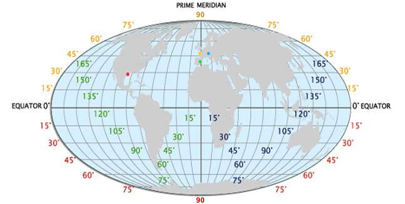

Comme on peut le voir dans le tableau juste au dessus, Léo partage en première approximation, la longitude avec la ville de Cuenca et la latitude de Constance quand il est à Saint-Nazaire.

Le point vert correspond à Cuenca
Le point jaune correspond à Saint-Nazaire
Le point bleu correspond à Constance